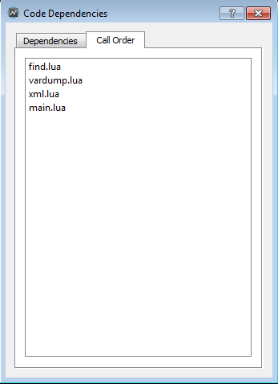

File System
In Gideros runtime, there are 3 kinds of directories: resource, document, and temporary.
You can access these directories using the io library provided by Lua:
io.read("data/list.txt")
You don’t need to know the exact path of resource, document and temporary directories because Gideros provides an easy way to specify files at these directories.
To sum up:
- Resource - stores your code and assets (can not be modified by the app)
- Document - can be used as persistent storages for files (can be modified by the app)
- Temporary - can be used as temporary storages for files (can be modified by the app)
Example of accessing each directory:
io.read("file.txt") --> open file.txt at resource directory to read
io.read("|R|file.txt") --> open file.txt at resource directory to read (same as above)
io.read("|D|file.txt") --> open file.txt at documents directory to read
io.read("|T|file.txt") --> open file.txt at temporary directory to read
Resource directory
Your code, image, audio and all other files are reside at resource directory. The file and folder structure of your asset library shown below

is stored at real device and Gideros Player like:
{resource directory}/gfx/sprite1.png
{resource directory}/gfx/sprite2.png
{resource directory}/gfx/background.png
{resource directory}/audio/game-music.mp3
{resource directory}/audio/click.wav
{resource directory}/data/list.txt
{resource directory}/main.lua
{resource directory}/game.lua
Resource directory is the default directory. Therefore, to access the files at resource directory, specify the file path as it is:
local sprite1 = Texture.new("gfx/sprite1.png")
local sprite2 = Texture.new("gfx/sprite2.png")
local background = Texture.new("gfx/background.png")
local music = Sound.new("audio/game-music.mp3")
local click = Sound.new("audio/click.wav")
Note: Optionally, you can access the files at resource directory by adding "|R|" to the begining of the file name (but you don’t need to):
local sprite1 = Texture.new("|R|gfx/sprite1.png")
Note: Resource directory is read-only and you should not try to write any files there.
Document directory
You can store application created files at document directory.
The files created at document directory is permanent between different application sessions. For example,
you can create and then read files at document directory to save player progress.
To specify a file at document directory, append "|D|" to the begining of the file name:
io.write("|D|save.txt")
The main advantage of document directory are that:
- Files can be modified
- Files can be stored persistantly
That is for example it is recommended to store database files or other user generated information in document directory
Here is a quick example how you can copy file from resource directory to document directory:
--function to copy file
local function copy(src, dst)
local srcf = io.open(src, "rb")
local dstf = io.open(dst, "wb")
local size = 2^13 -- good buffer size (8K)
while true do
local block = srcf:read(size)
if not block then break end
dstf:write(block)
end
srcf:close()
dstf:close()
end
--function to check if file exists
local function exists(file)
local f = io.open(file, "rb")
if f == nil then
return false
end
f:close()
return true
end
--usage
if not exists("|D|database.db") then
copy("database.db", "|D|database.db")
end
Temporary directory
You can create and store temporary files at temporary directory.
The files created at temporary directory are not guaranteed to exists between
different application sessions. They may be deleted after your application
session finishes. To specify a file at temporary directory, append "|T|" to the begining of the file name:
io.write("|T|temp.txt")
This storage may be used for example, to display some temporary data, like images downloaded from somewhere:
--download completed
local function onComplete(event)
--store image in temporary folder
local out = io.open("|T|image.png", "wb")
out:write(event.data)
out:close()
--display it to user
local b = Bitmap.new(Texture.new("|T|image.png"))
b:setAnchorPoint(0.5, 0.5)
b:setPosition(160, 240)
stage:addChild(b)
end
--load image
local loader = UrlLoader.new("http://www.giderosmobile.com/giderosmobile.png")
--add event listener
loader:addEventListener(Event.COMPLETE, onComplete)
Lua Files and Execution Order
By default Gideros executes all lua files on both players and in real app.
We can assume that the order of execution is pretty random, but there are two things guaranteed:
- init.lua will always be executed first
- main.lua will always be executed last
So the best practice is:
- to add all additional functionality and modifications to existing classes in init.lua
- do all initialization of app etc in main.lua (when all other code was already loaded)
- wrap the code in any other lua file in a scope as function
Yet better create each lua file as a separate Gideros class, either it will be a scene shown in scene manager or some simple object represented by class, but there should not be some plain code executed in these files, only in main.lua
Of course, all can be configured
Before an Gideros application starts, all Lua files at asset library are executed one by one. So it is possible to arrange the order of execution by setting the code dependencies between Lua files.
If you right click a Lua file and select “Code Dependencies…” from popup menu, “Code Dependencies” dialog opens:

In this menu, you can set the dependencies between Lua files. For example,
if a.lua is dependent to b.lua, b.lua is always executed befure a.lua.
If you select “Call Order” tab, you can see the execution order:

Note: The file names main.lua and init.lua have special meaning: When an application starts,
Gideros runtime tries to execute init.lua first and main.lua last.
strict.lua
For the detailed explanation of strict.lua, please refer to http://www.lua.org/pil/14.2.html
strict.lua checks uses of undeclared global variables. If strict.lua is executed, all global
variables must be ‘declared’ through a regular assignment (even assigning nil will do) in a main
chunk before being used anywhere or assigned to inside a function. Although optional, it is a
good habit to use it when developing Lua code.
To execute strict.lua before all other Lua files, simply add strict.lua and init.lua to
asset library and make strict.lua dependent to init.lua.
You can download strict.lua from here that originally comes with the Lua distribution.